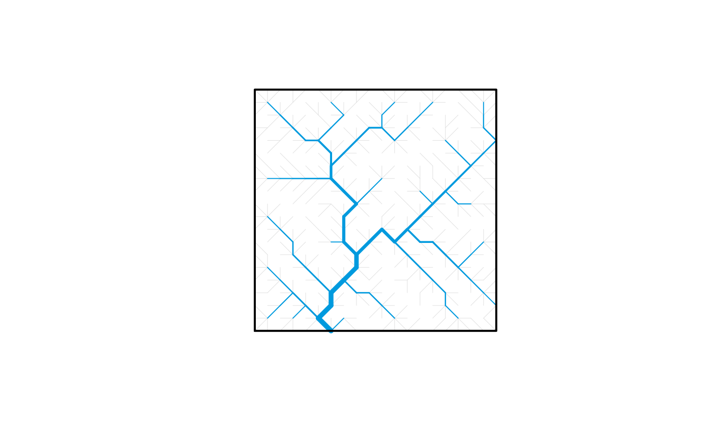

Draw Optimal Channel Network with catchment contours
draw_contour_OCN.RdFunction that plots real-shaped OCN and catchment contours.
Usage
draw_contour_OCN(OCN, thrADraw = 0.002 * OCN$FD$nNodes *
OCN$cellsize^2, exactDraw = TRUE, drawContours = TRUE, colPalRiver = NULL,
colPalCont = "#000000", drawOutlets = 0, pch = 15, colPalOut = "#000000",
min_lwd = 0.5, max_lwd = 5, contour_lwd = 2, add = FALSE)Arguments
- OCN
A
riverobject as produced bylandscape_OCN.- thrADraw
Threshold drainage area value used to display the network.
- exactDraw
If
TRUE, the real shape of OCNs is plotted. If flow crosses a boundary, the pixel that is not contiguous to its outlet is flipped. It is only effective ifOCN$PeriodicBoundaries = TRUE- drawContours
If
TRUE, plot catchment(s) contours.- colPalRiver
Color palette used to plot the river network(s). Default is a rearranged version of theme
"Dark 3"(seehcl.pals).colPalRiveraccepts both functions creating color palettes and vectors of colors (of which the firstOCN$nOutletelements are used). If a single color value is provided andOCN$nOutlet > 1, all river networks are drawn with the same color.- colPalCont
Color palette used to plot the catchment contour(s). Details as in
colPalRiver. Additionally, ifcolPalCont = 0, the palette specified incolPalRiveris copied.- drawOutlets
If equal to
1, black squares are drawn at the outlets' locations behind the river; if2they are plotted on top of the river.- pch
Shape of the outlet points (if
drawOutlets = TRUE). Seepointsfor legend.- colPalOut
Color palette used to plot the outlet points (if
drawOutlets = TRUE). Details as incolPalRiver. Additionally, ifcolPalOut = 0, the palette specified incolPalRiveris copied.- min_lwd, max_lwd
Minimum and maximum values of line width used to display the OCN (actual line width is proportional to the square root of drainage area).
- contour_lwd
Line width value for catchment contour plotting.
- add
Logical. If
TRUE, add to an already existing plot. Taken asFALSE(with a warning if a different value is supplied) if no graphics device is open.
Details
For not too large networks (i.e. if OCN$FD$nNodes <= 40000, corresponding to a 200x200 lattice),
pixels whose drainage area OCN$FD$A is lower than thrADraw are drawn with a light grey stroke.
If OCN$FD$nNodes > 40000, in order to speed up the execution of this function, only the network constituted
by pixels such that OCN$FD$A > thrADraw is drawn.
Examples
# 1) draw contour of a 20x20 single-outlet OCN
# (for single-outlet OCNs without periodic boundaries, the output
# of draw_contour_OCN is very similar to that of draw_simple_OCN)
draw_contour_OCN(landscape_OCN(OCN_20), thrADraw = 4)

if (FALSE) { # \dontrun{
# 2a) plot real shape of multiple-outlet OCN created with periodic boundaries
# add outlets on top of the rivers
OCN <- landscape_OCN(OCN_300_4out_PB_hot, displayUpdates = 2) # it takes around one minute
draw_contour_OCN(OCN, drawOutlets = 2)
# 2b) same as before, but use same color palette for rivers and contours
draw_contour_OCN(OCN, colPalCont = 0)
# 2c) draw contours of catchments obtained from an OCN with nOutlet = "All"
OCN <- landscape_OCN(OCN_400_Allout, displayUpdates = 2) # it takes some minutes
draw_contour_OCN(OCN)
# 2d) same as above, but do not plot contours, and plot outlets
# with same color palette as rivers
draw_contour_OCN(OCN, drawContours = FALSE, drawOutlets = TRUE,
colPalOut = 0)
} # }